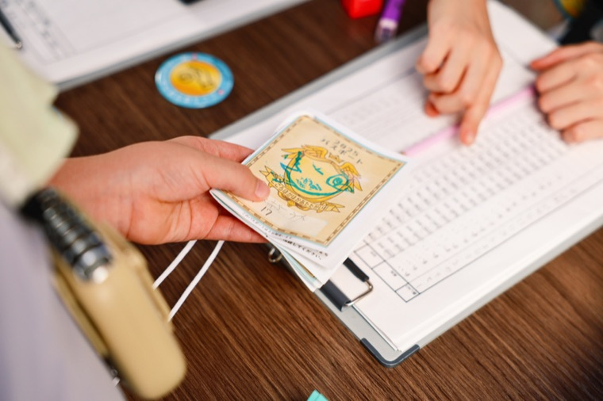
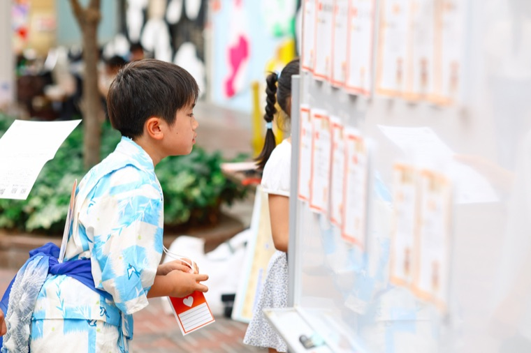
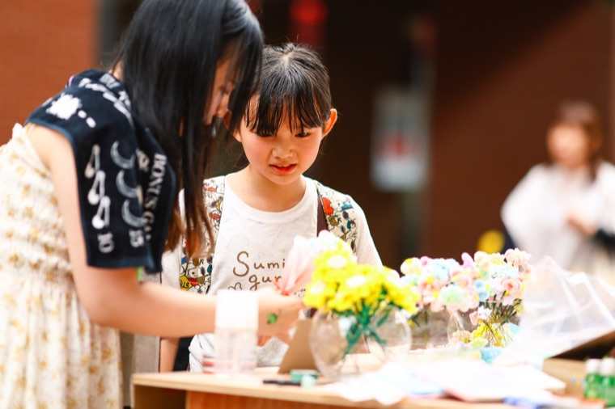
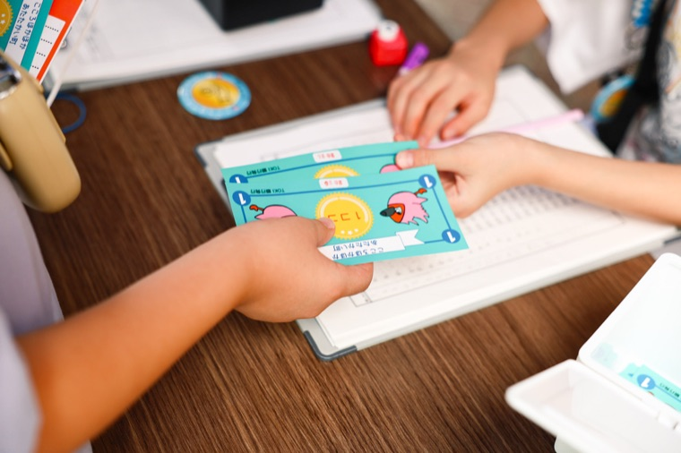
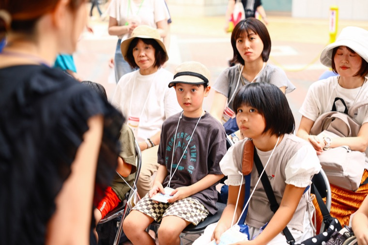
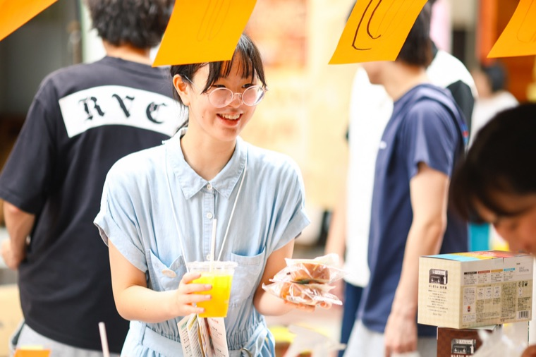
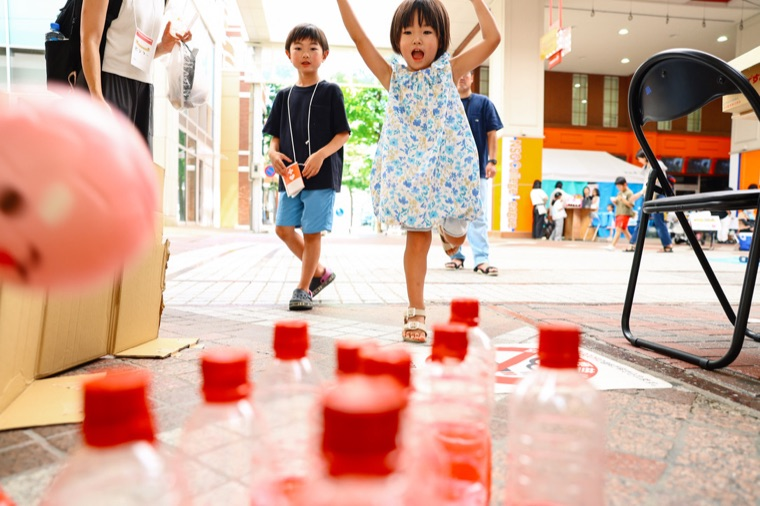
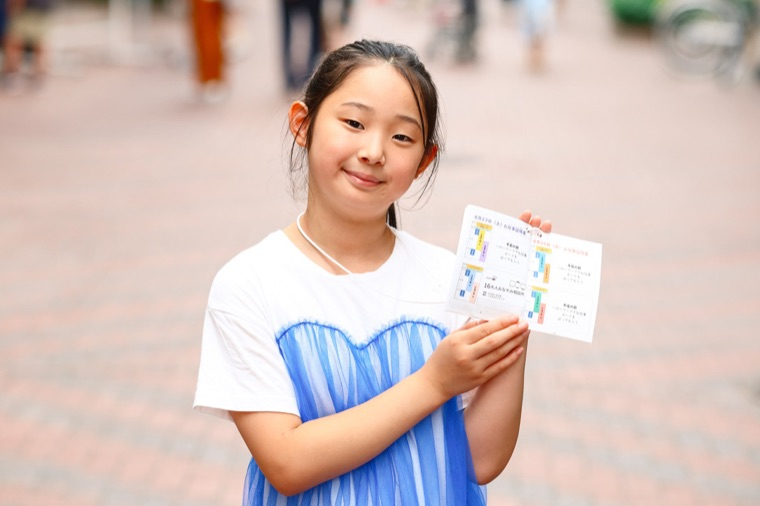

市民の一日
ここほかに「こうしなさい」という決まりはありません。
これはあくまで、よくある一日のかたちです。
午前まちにきて、はたらく


市民とうろく
受付でとうろくをして、パスポートをもらいます。あなたもここほかの市民。まずはまちをひとまわりして、どんなお店があるのか見てみよう。


ハローワークで、お仕事さがし
まちのハローワークには、いろんなお仕事がならんでいます。市役所、銀行、警察、おまつり屋台のようなゲームに、飲食店の見習い。「これ、やってみたいかも」と思ったものを選ぼう。まよってもだいじょうぶです。

はじめての、お仕事
えらんだお店やブースへ。やり方は、そこにいる人が教えてくれます。はじめてでも平気。うまくいかなくても、平気です。

お給料。そして、ぜいきん。
お仕事をがんばると、まちの通貨「ココ」が支払われ、そのあとはもらったお金のなかから、ぜいきんをおさめます。このお金が、まちを動かしていきます。
午後かせいだお金で、すごす
おひるごはん
かせいだココで、ごはんを買います。自分で働いたお金で食べるおひるは、ちょっとだけ特別な味がします。



すきなことを、する
買いものをしたり、ワークショップに参加したり。おもしろい大人がおもしろいことを教えてくれる「こども大学」で学ぶのもいい。もっと働いてお金をためる、というのもアリです。

まちが、おしまい
一日の終わり。パスポートを持って、まちを出ます。「きょうはこれができた！」と思いながら帰るころには、朝よりちょっとだけ大きくなっているはずです。
※これはあくまで一例です。当日のくわしいスケジュールは、決まりしだいお知らせします。